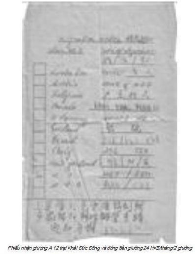
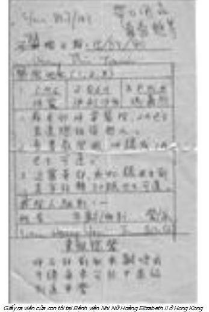
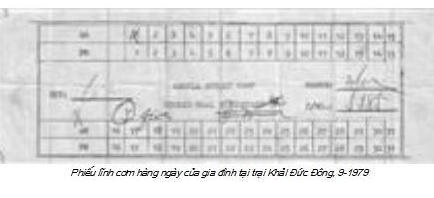

Chương 5

hẳng qua chỉ tại Vua Hùng
Sinh ra một lũ vừa khùng vừa điên.
Thằng khôn nó đã vượt biên
Còn lại một lũ vừa điên vừa khùng.
(Đồng dao mới)
Sáng sớm 31 tháng 8, mới gần 6 giờ, chúng tôi được lệnh chuyển trại đột ngột. Tất cả rộn ràng, nhốn nháo chuẩn bị đồ đạc mặc dù chẳng có thứ gì đáng giá. Một đoàn xe tải chở tù, màu sơn đen, thùng xe không bịt, vải bạt được cuốn lên. Chúng tôi ngồi trên hai hàng ghế băng sát thành, một số đứng, đồ đạc để dưới chân. Đoàn xe từ từ lăn bánh ra khỏi Kho Đen.
Như vậy chúng tôi đã được công nhận là người tỵ nạn cộng sản hay còn gọi là “thuyền nhân” (boat people), không còn là kẻ nhập cảnh bất hợp pháp, nay chuyển trại, chờ định cư ở nước thứ ba.
Xe đi quanh co qua những phố xá đông đúc, những dãy nhà cao tầng, những biển quảng cáo bằng điện nhấp nháy, nhảy múa, các cửa hàng bày bán la liệt đủ các mặt hàng làm chúng tôi hoa cả mắt. Lần đầu tiên mọi người nhìn thấy những sạp bán hoa quả bày từng đống táo, cam, lê, nho, mận… cao như núi. Nhìn cũng thấy sướng con mắt, chúng tôi ai cũng nuốt nước bọt. Có gì đâu, 25 năm dưới ‘‘chế độ XHCN tươi đẹp’’ làm gì trông thấy của ngon vật lạ mà chả thèm, chả nuốt nước bọt!
Đúng là số phận thuyền tôi hẩm hiu. Đang hí hửng nghĩ đến chỉ lát nữa là người tự do, không ngờ trại Khải Đức Đông hôm ấy không làm việc.
Ngày 31-8-1979 là thứ Sáu, chả biết ngày gì, văn phòng trại đóng cửa, không có người nhận bàn giao. Đoàn xe lại vòng vo đưa chúng tôi về Kho Đen. Tất cả đều thất vọng và tự nguyền rủa số phận, đi đâu chết trâu đến đấy. Mọi thuyền thường chỉ phải ở Kho Đen 2 đến 3 tuần, thuyền tôi đúng một tháng, ấy thế mà lại “tái hồi Kim Trọng” ngoài ý muốn, tránh sao khỏi buồn. Xuống xe lại chui vào kho 1, bao nhiêu người kho khác xúm lại hỏi duyên cớ. Nào ai biết, chỉ biết ngày mai Thứ Bảy, trại nghỉ tiếp, chúng tôi phải chờ Thứ Hai tuần sau.
Buồn ơi là buồn!
Đã thế mà chiều thứ Bảy, một trận cuồng phong lại ập đến. Gió rít, giật từng hồi, những đợt mưa như dội nước xuống mái tôn ầm ầm như tiếng trống.
Kho 1 run lên bần bật tưởng chừng bị gió cuốn phăng đi. Trẻ con co rúm lại, túm chặt cha mẹ khi những tiếng sấm nổ vang trời, chớp ngoằn ngoèo sáng rực qua khe hở. Cả kho 1 bị mưa hắt và dột, nuớc chảy lênh láng, chúng tôi ai kiếm được tấm gỗ kê lên cao còn hy vọng cho đàn con ngả lưng, còn không đành chịu trận. Mãi đến gần 7 giờ, mưa ngớt, gió bớt giật, xe cơm của nhà thầu mới đến.
Tối ấy chúng tôi được bữa thật no, vì một thuyền cùng kho đã ra tự do, nhà thầu không biết, cứ thế giao như cũ. Chúng tôi cũng tham, nhận luôn chẳng chê, được 2 thùng cơm, 4 nồi thịt và rau chứ không phát bánh mỳ thịt hộp như thường lệ. Mưa rét, lại đói nên chúng tôi ăn hết chẳng thừa chút nào. Đói góp no dồn!
Sáng Thứ Hai 03-9-79, chúng tôi mới được chuyển trại. Lần này xe vẫn đi vòng qua những phố xá nhưng không còn háo hức, hồi hộp như ngày 31-8 nữa. Đoàn xe vào cổng, tất cả chúng tôi tay đùm tay xách, xuống xe và được lệnh xếp hàng đợi trưởng trại. Không chỉ có thuyền tôi, nhiều thuyền khác cũng chuyển tới. Khoảng nửa giờ thêm gần chục xe vào trại.
Hóa ra ngoài trại cấm Kho Đen (detention camp) người tỵ nạn còn bị nhốt ở nhà tù Victoria, nhà tù Chi-Ma-Wan và trại cấm A-Cai-Lau-Cai. So với ba trại kia, người ở trại Kho Đen còn sướng chán.
Anh Hà Quang, một người từng bị nhốt ở nhà tù Victoria –nơi thuở xưa ông Hồ đã ngồi tù- kể, thuyền anh vừa vào lãnh hải Hong Kong bị xuồng cảnh sát kéo vào và tống ngay vào tù sau khi làm thủ tục nhập cảnh bất hợp pháp. Một buồng giam bé tí, họ tống 3 bố con anh và 4 người lớn rồi đóng sập cửa. Phòng bỗng nhiên tối om, hai đứa con anh sợ quá xón đái, tìm nhà cầu không có. Anh đấm cửa ầm ầm, một tên cảnh sát mở lỗ kiểm tra hình chữ nhật ở cánh cửa, quát:
- Chúng mày muốn gì?
- Con tôi muốn đi vệ sinh nhưng không có nhà cầu.
- Chờ đấy.
Khoảng mấy phút sau, cửa hé ra, nó đưa vào một thùng gỗ. Tất cả không chịu, vẫn hò hét. Nó giơ dùi cui ra dọa, tuy sợ nhưng mọi người vẫn la, nhất là trẻ con khóc ầm ĩ, nó đành mở cửa.
Nhưng theo anh Hà Quang, ai ở nhà tù Victoria số phận còn may hơn ở nhà tù Chi-Ma-Wan. Trại tù này nằm trên một hòn đảo nhỏ, quản lí chặt chẽ, rất khó trốn, trốn ra cũng không thể bơi qua eo biển sang đất liền.
Bị nhốt ở trại này, số phận cầm chắc về ông nội (đại lục), bởi vì thấy người từ Việt Nam sang Hong Kong, dân Trung Quốc cũng “té nước theo mưa.” Người Việt gốc Hoa về “ông nội” không kham được việc nông trường, đua nhau bỏ chạy. Chính phủ Trung Quốc mắt nhắm mắt mở, làm căng, con ruồi cũng không lọt chứ đâu hàng ngàn người sang Hong Kong dễ đến thế.
Anh Hà Quang cũng từ nông trường, may còn đủ giấy tờ kể cả bằng lái xe, chứng minh thư nhân dân Việt Nam, nên được ra Khải Đức Đông.
Thuyền Việt Nam mũi thường nhọn hai đầu, trông giống hình vỏ trấu. Thuyền Trung Quốc phía đuôi gần như phẳng, nên cảnh sát Hong Kong nhìn là biết. Thuyền nào của Trung Quốc tống ngay vào nhà tù Chi-Ma-Wan. Bị nhốt trại này khó hy vọng ra tự do.
Từ năm 1980, kinh tế Việt nam bên bờ vực thẳm, Mỹ cấm vận, Trung quốc bao vây kinh tế, lương thực thực phẩm thiếu trầm trọng, giá cả leo tháng đến chóng mặt, nhân dân bất mãn, nhiều nơi biểu tình, bạo động.
Những tỉnh ven biển như HảI phòng, Quảng Ninh tìm thuyền chạy đi Hong Kong. Vượt biên thành phong trào, rầm rộ, gần như công khai. Cán bộ đảng viên, kể cả công an cũng “té nước theo mưa” chạy sang Hong Kong như chảy hội. Thời ấy có câu thành ngữ “Cột đèn biết đi cũng vượt biên”, riêng một xã ven biển Hải phòng, xã Lập Lễ, huyện Thủy Nguyên, một đêm 30 gia đình ngư dân vượt biên. Người Việt miền Bắc vượt biên sang Hong Kong kéo dài đến giữa thập niên 1990. Nhiều người bị Cục Di Dân Hong Kong trục xuất, về Viêt nam sau vài tháng lại sang, thay tên đổi họ.
Từ sau thời hạn cuối cùng 16-6-1988, tất cả người Việt Nam nhập cư bất hợp pháp đều bị nhốt ở nhà tù Chi-Ma-Wan. Họ được gắn mác “tỵ nạn kinh tế”, không được hưởng quy chế tỵ nạn. Có người bị nhốt rất lâu, phải hồi hương nhưng chính phủ Việt Nam không nhận. Trung Quốc yêu cầu chính phủ Anh giải quyết số tỵ nạn này trước khi Hong Kong trở thành Đặc khu của Hoa lục. Năm 1992, Anh quốc nhận thêm người tỵ nạn ở Hong Kong, đa số là người Hải Phòng và Quảng Ninh.
Tôi quen gia đình có thâm niên 4 năm ở trại này. Họ kể khi gặp Cục Di Dân Hong Kong phỏng vấn, càng nói dối càng được tin và được ra tự do.
Có tay sĩ quan hải quân Bắc Việt, ăn cắp hàng bị tù, ra tù vượt biên, khi phỏng vấn, khai, tù vì chống chính phủ, y được chấp nhận tỵ nạn.
Một giảng viên trường Đại học Bách khoa tham ô tài sản, vợ làm nhân viên sở công an Hải phòng ăn cắp của công, cả hai bị đuổi việc, khi phỏng vấn, khai, bị đuổi việc vì kêu gọi sinh viên chống chính phủ. Trại này rất lộn xộn, trộm cắp hoành hành cướp bóc bà con công khai, các băng đảng đua nhau ra đời, nhiều cuộc bạo động đập phá đốt trại được đài truyền hình Vương quốc Anh đưa tin.
Thân phận tù đã là khổ, nhưng tù ở Việt Nam còn bị cai tù lợi dụng, ít nhất bị bóc lột sức lao động. Năm 1971, viên đại úy trưởng trại giam tỉnh tôi nhân một tháng đầy cữ con trai, mời bác sĩ Khải và tôi đến nhà liên hoan. Chả là vợ anh đẻ bị ngôi ngang sa tay nên bác sĩ Khải, người trực, mổ cấp cứu và tôi là trợ thủ, nay sau một tháng “mẹ tròn con vuông” anh mời chúng tôi, gọi là chút ân tình của gia đình đối với thầy thuốc.
Từ thị xã, chúng tôi đạp xe gần 7 km vào sâu bìa rừng gần trại giam. Thấy chúng tôi, anh ra tận cổng bắt tay thân mật. Nhà anh, một nếp nhà gỗ 5 gian lợp ngói hoành tráng, tất cả các cột nhà tròn to toàn gỗ sến, táu, trai đã lên nước bóng nổi rõ từng đường vân thật đẹp. Tủ chè, bàn ghế, giường model Hong Kong đều bằng gỗ lát hoa, lát chun, toàn gỗ quý hiếm thuộc hàng cấm khai thác, mua bán theo văn bản của nhà nước.
Anh thân chinh bóc gói chè Hồng Đào mới nguyên, pha nước mời. Vài câu chuyện xã giao, vợ anh bế con ra chào, anh dẫn chúng tôi ra xem vườn và ao cá. Vườn anh thật đẹp, toàn cây lưu niên: cam, chanh, hồng bì, nhãn, vải, trồng theo thứ tự từng hàng thẳng tắp và chiếc ao cá đến hơn trăm mét vuông. Xung quanh là hàng tre bao bọc, cơ ngơi vài héc-ta, một kiểu nhà vườn sinh thái đầy mơ ước. Thấy chúng tôi trầm trồ và có ý hỏi với gia cảnh chỉ có hai vợ chồng và 3 đứa con nhỏ làm sao chăm sóc nổi. Anh cười, nháy mắt, nói nhỏ:
- Các cậu ấy giúp đấy.
Chúng tôi hiểu, “các cậu ấy” nghĩa là các tù nhân làm không công cho trưởng trại, bởi vì mỗi lần lễ Tết, nhà nước đặc xá, người đưa danh sách chính là trưởng phó trại giam. Anh chỉ sang góc bên trái, cũng một hàng tre xanh mướt bao quanh khu vườn, một nhà ngói 5 gian, anh bảo:
- Nhà cậu phó trại Minh đấy.
Ngày 31-8-1975, tôi đang ngồi chơi nhà anh bạn ở thị xã, bốn người mặc áo phạm nhân đến hỏi mua lợn, chủ nhà dẫn họ ra chuồng. Người phạm nhân lớn tuổi bảo:
- Tưởng bác có lợn dái (lợn đực giống) hay lợn sề chứ lợn này chúng em chả mua.
Anh bạn tôi cười:
- Mấy anh này lạ thật, lợn dái ăn làm sao được. Nấu xong, gắp lên khác nào đưa tất (vớ) vào mồm, hôi mù mù nuốt không trôi. Lợn sề đẻ dăm lứa dai như da trâu, nhai mỏi quai hàm ăn sao nổi. Các cậu tham rẻ hay sao, toàn hỏi những hàng “đặc sản” như vậy?
Nhìn trước nhìn sau, anh phạm nhân nói nhỏ:
- Các anh tính, cả năm có 2 dịp, lễ 02-9, Tết nguyên đán mới được ăn tươi. Mua thứ như thế, tụi tôi mới có miếng bỏ mồm, vả lại rẻ, mua một thành hai, chứ thịt ngon các cán bộ coi tù không những ăn, còn đem về cho vợ con, chỉ còn ăn lòng, thủ và dăm miếng bèo nhèo là hết cỡ.
Cai tù Victoria, Chi-Ma-Wan, Kho Đen ở Hương Cảng tuy đểu cáng, ma cô nhưng cũng chưa bót lột sức lao động hay tranh cả miếng ăn của người tù như cai tù XHCN rất sành điệu bóc lột gian manh mà không phạm luật.
Vị trưởng trại Khải Đức Đông nói tiếng Quảng, có người thông dịch sang tiếng Việt rõ ràng mạch lạc, ai cũng hiểu. Chúng tôi được lần lượt làm thủ tục nhận vật dụng trại cấp: phiếu lĩnh cơm, số giường (hai người một giường đơn kèm chiếc chiếu), hai người một xô nhựa, một chậu nhựa, mỗi người một đôi dép lê, một bát nhựa, đĩa nhựa. Chúng tôi được xếp vào kho A12. Đến đây coi như thuyền giải tán, chủ thuyền không còn là vị chỉ huy tối cao của chúng tôi. Tuy thế, y vẫn lải nhải đòi tiền bà con, y bảo tiền sửa thuyền ở Bắc Hải quá nhiều, số 22 người nhận thêm vẫn chưa đủ. Thỉnh thoảng y lại triệu tập bà con để họp (họp con mẹ gì?), sau khi kể lể con cà con kê, y lại nhai nhải yêu cầu bà con đóng góp trả nốt số tiền mà y cho chịu (sao lại là chịu?). Nhiều người không họp, lý do ông chẳng là cái đinh gì có quyền bắt chúng tôi họp. Vài lần chán, y đành chửi thầm quân ăn cháo đá bát.
Sân bay Khải Đức là sân bay lớn duy nhất Hương Cảng, không biết vì lý do gì nhường hẳn một phần để lập trại tỵ nạn. Đứng ngay trong sân, nhìn qua hàng rào chúng tôi trông rõ máy bay chạy trên đường băng.
Đầu năm 1979, một khu nhà 4 tầng thuộc sân bay ngay sát đường lộ đã được trưng dụng làm trại, gọi là Pắc Dzềnh (Bắc doanh-trại Bắc), phân biệt với trại chúng tôi Tống Dzềnh (Đông doanh-trại Đông).
Khi chúng tôi đến mới dựng xong A12, cuối năm 1979 có A25 sau đó lại chia ra Khải Tắc Đông A và Khải Tắc Đông B bằng một hàng rào dây thép.

Một nhà (gọi là A), đánh dấu sơn đỏ ngoài cửa, khá lớn. Tất cả đều bằng tôn lá ghép lại, từ mái đến 4 bức tường và 2 cửa ra vào, cột cũng bằng sắt. Mùa hè nóng ơi là nóng, ngang trong lò nướng thịt. Mùa đông lạnh cóng người, như trong tủ lạnh. Chiều ngang kê được 4 dẫy giường 3 tầng, sát hai bên, lối đi ở giữa, khoảng 2 mét, thông hai đầu, chiều ngang chừng 10 mét. Cứ 2 giường sát nhau chừa một khoảng trống hơn một mét làm lối đi và cho người tầng trên lên xuống.
Gia đình tôi được 2 giường gần ngay cửa nên đỡ nóng, rất may được ở tầng 2, tầng lý tưởng nhất. Tầng một thường dành cho người già và gia đình có cháu bé dưới 2 tuổi. Tầng này tuy tiện lợi không phải trèo, nhưng là tầng bị bọn xấu để ý, thường xuyên bị mất đồ. Tầng 3 dành cho người lớn, rất bất tiện, làm bất cứ điều gì ai cũng nhìn thấy. Chuyện riêng tư như phụ nữ thay quần áo cũng thật khó khăn. Mưa, dàn nhạc hỗn loạn gõ lên đầu, mắc bệnh khó ngủ chắc khó chợp mắt, hơn nữa gần mái tôn nên hè nóng, đông lạnh. Tầng 2 lý tưởng nhất, trèo không cao, có cột giường bốn bên, khi cần lấy vải che lại, gia đình có một khoảng tự do không bị ai nhòm ngó trong cuộc sống xô bồ hỗn loạn, chung chạ.
Sự khác biệt giữa trại Khải Đức và Kho Đen như sau:
-Được tự do đi lại, không bị cảnh sát nhòm ngó, chặn ngang hỏi bất chợt. Số lượng cảnh sát ít, thường đứng ở khu văn phòng, khu ra vào, đi kiểm tra quanh trại.
-Nhà tắm, nhà vệ sinh nhiều. Có khu riêng nam nữ.
-Thường xuyên có đại diện của các tổ chức đến thăm, tìm hiểu, lắng nghe những ý kiến và tìm cách giúp đỡ, trong số đó có Sơ Liên. Sơ có khuôn mặt phúc hậu, dễ mến. Những gì đã hứa, lần sau quay lại, Sơ thông báo được hay không. Ra trại tự do, nhưng chưa đi làm, không có tiền mua tem, chúng tôi nhờ sơ gửi thư về Việt Nam.
Chuyện này tuy nhỏ nhưng khá tốn kém, mỗi lần sơ đến, vài chục người chuẩn bị thư chờ sẵn. Nhờ lòng hảo tâm của Sơ, chúng tôi đã thông tin được cho người thân. Ơn này thật lớn, chúng tôi không bao giờ quên, xin cầu phước cho bà.
Cũng nhờ Sơ mà bố vợ tôi, sau khi nhận được thư, lên tận UBND xã tế (chửi) cho chúng một trận.
Chúng tung tin tôi là gián điệp nhị trùng (Mỹ và Trung Quốc), bị đụng xe ô-tô chết ở Hải Phòng, còn vợ con tôi đi bộ từ Hải Phòng sang Thái Lan viết thư gửi bỏ dọc đường có người nhặt được gửi về xã. Chủ tịch xã là cháu, gọi bố vợ tôi là cậu ruột, dám làm chuyện động trời như vậy, huống chi những người khác.

-Trại có phòng chờ, phòng khám bệnh và phát thuốc do bác sĩ và y tá Hong Kong làm việc, đồng thời thuê người tỵ nạn biết tiếng Quảng và tiếng Việt làm thông ngôn.
Bữa cơm đầu tiên mà chúng tôi cảm thấy ngon miệng nhất kể cả đến nay, sau hơn 30 năm định cư, từng dự biết bao bữa tiệc thịnh soạn ở nhà hàng, cuộc đại lễ… mà mỗi khi hỏi đàn con, bữa cơm nào ấn tượng nhất, chúng đều bảo: bữa cơm hộp đầu tiên ở Khải Tắc Đông.
Giấc ngủ ngon nhất đối với tôi là đêm 01-8-1979. Từ khi xẩy nhà ra thất nghiệp, lang bạt kỳ hồ (30-4) sau hơn 3 tháng nằm vật nằm vạ khắp nơi và lênh đênh trên biển, lúc nào cũng ngất ngư, say sóng, cả nhà năm mạng trong một khoảng rộng bằng chiếc chiếu đơn, tôi thường ngủ ngồi hoặc nằm co con tôm. Đêm 01-8 lần đầu tiên ngủ được duỗi thẳng chân, tuy vẫn còn cảm giác bồng bềnh, lắc lư say sóng.

Trưa 03-9-1979, nhà thầu đưa cơm hộp đến, từng hộ gia đình đem phiếu cơm ra nhận phần, mỗi người một suất không kể lớn bé già trẻ trai gái, món ăn lại có 5 món khác nhau. Mấy xe tải có nữ nhân viên phục vụ mặc áo đồng phục, sạch sẽ, nét mặt tươi cười, đon đả, tử tế yêu cầu mọi người xếp hàng trước xe rồi thông báo có 5 loại món ăn, tùy ý lựa chọn.
Mỗi xe đưa cơm có hai cảnh sát đứng quan sát, không nói, nhưng nét mặt thân thiện khác hẳn những nét mặt hầm hầm cau có của những tên cai tù ở Kho Đen.
Nhà tôi 5 suất, lấy 5 món khác nhau, không phải chia chác nhiều ít, hơn nữa chất lượng nhà thầu tốt hơn nhiều so với Kho Đen, có nghĩa là rất ngon nhất là với lũ chết đói chúng tôi. Suất cơm khá nhiều, người lớn ăn cũng cảm thấy no, thế mà các con tôi (đứa bé gần 4 tuổi) vét sạch không thừa một hạt nào.
Thời bấy giờ Hong Kong có rất nhiều trại tỵ nạn vì con số người tỵ nạn lên đến hàng trăm ngàn, nhưng tiêu chuẩn và chế độ ở từng trại lại rất khác nhau. Đến nay sau 30 năm, tôi vẫn chưa hiểu tại sao cùng dưới sự bảo trợ của cơ quan Liên Hiệp Quốc mà mỗi một trại tỵ nạn lại có những quy chế riêng.
Sát bên trại tôi là trại Bắc Khải Đức -Pắc Khải Tắc- Thuyền nhân ở đây đa số người Quảng Ninh, vượt biên rất sớm, đến Kho Đen từ sau Tết nguyên đán 1979. Nhốt trại hơn sáu tháng, ngày ngày vẫn 2 bữa cơm hộp, nhìn sang trại tôi ra vào tấp nập, người đi chợ lũ lượt tay xách nách mang nào gà, thịt, cá, rau quả… cười đùa, họ uất lắm. Một cuộc bạo động nổ ra, đốt giường, đốt trại… loạn xì ngầu. Cảnh sát khu vực can thiệp.
Cuối cùng họ được tự do đi làm.